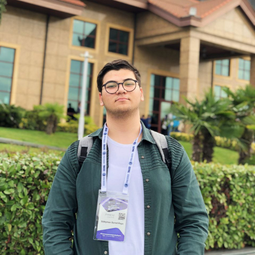

Hakkımda

Selamlar ben Süleyman Samet Kaya. 26 Şubat 2004 tarihinde Denizli'de doğdum. Çocukluğumdan itibaren meraklı ve öğrenmeye istekli biriydim. Bilime, teknolojiye ve uzaya büyük bir ilgi duydum. Bilim insanı olma hayaliyle her zaman araştırma yapmayı ve kendimi geliştirmeyi hedefledim.
Eğitim hayatıma Hacı İbrahim Demireren Cumhuriyet İlkokulu'nda başladım ve ardından Hürriyet Ortaokulu'na devam ettim. Orada robotik kodlama projeleriyle ilgilenmeye başladım ve küçük çaplı projeler geliştirdim. Sonrasında Cumhuriyet Anadolu Lisesi'ne geçtim ve burada fizik ve bilişim hocalarımın yardımıyla okulumuzun proje ekibine katıldım. Bu süreçte robotik kodlamanın yanı sıra yazılım ve Ar-Ge projeleri üzerinde çalışmaya başladım. Ayrıca bu okulda en iyi arkadaşlıklarımı kurma fırsatı buldum ve mezuniyetimde okul birincisi olarak gururla ayrıldım.
Şu anda Sakarya Üniversitesi'nde bilgisayar mühendisliği okumaktayım. Üniversitemizin kulüplerinden biri olan SAÜ İHA'nın AR-GE biriminin sorumlusu ve medya ekibinde yer almaktayım. Bu görevler sayesinde teorik bilgilerimi pratik uygulamalarla birleştirme fırsatı buldum. Bu sene Türkiye Teknoloji Takımı Vakfı'nın düzenlediği TEKNOFEST Uluslararası İnsansız Hava Araçları yarışmasında Kuara Havacılık takımının yazılım biriminde yer aldım ve yaklaşık 3000 takım arasından 11. olarak büyük bir başarı elde ettik.
Gelecekteki hedefim bu alanda kendimi daha da geliştirmek ve savunma sanayi alanında büyük projelerde çalışmak. Bilgisayar mühendisliği eğitimim ve deneyimlerimle bu alanda başarılı projelere imza atmayı amaçlıyorum.